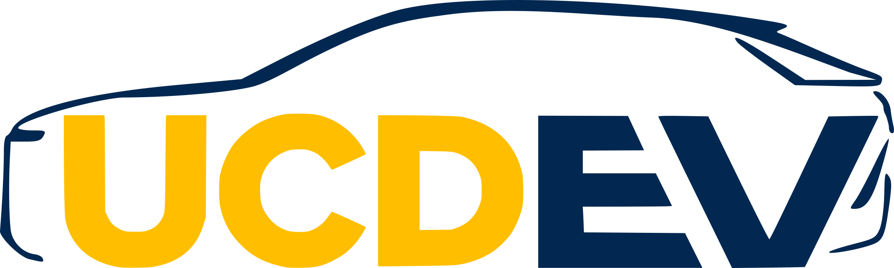
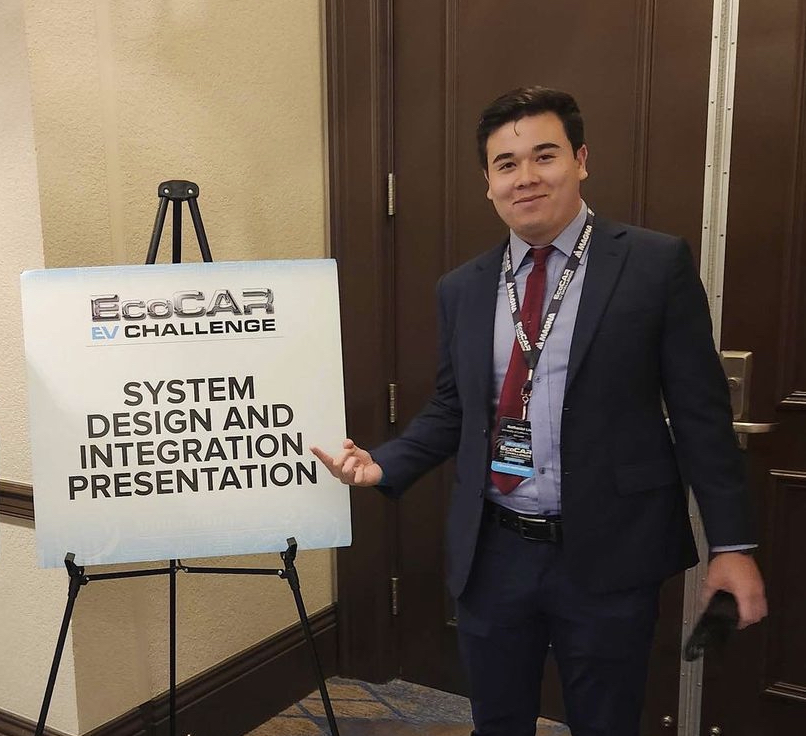

Nathaniel Lim
About Me
I am a 1st year graduate student in Mechanical Engineering at Stanford University seeking internships for the summer of 2024. I take pride in my technical ability as well as my capacity for creativity. I use both to build things that bring people utility and joy.
Experience
Tesla
Throughout my 2 internships with Tesla's hardware test org, I was able to assume the responsibilities of a full-time
test engineer and take end-to-end ownership of the mechanical, electrical, and control systems design
a number of critical component, system, and vehicle-level tests. Tests and
fixtures I designed during these internships cost anywhere from $500 to $25,000 to produce and provided countless meaningful
insights that were used to improve vehicle reliability, safety, and quality. I've noted my favorite projects below.

EcoCAR UC Davis
The EcoCAR EV challenge is a student competition in which teams compete to build the best next generation electric vehicle. As the system design and integration lead for UC Davis' team, I completed several notable individual projects in addition to my leadership responsibilities.
Projects
1. 4-Bar Window Cycler (Tesla)
Wrote and utilized linkage synthesis tools in C to generate a 4-bar geometry capable of cycling a manual side window with an irregular handle sweep. Final design was able to load the system in a human-representative manner while only requiring 1 actuator and relatively simple controls.2. Vertical Strength Testing Gantry (Tesla)
Designed and implemented a vertical gantry system capable of applying high loads to every +z surface on a vehicle. Structural design was driven by seismic loads and deflection criteria at the end effector.3. Cable Durability Test Rig (Tesla)
Designed and implemented a test rig and control system capable of durability testing 12 separate cables independently while continuously collecting performance data and detecting failures.4. Custom Cadillac LYRIQ Subframe and Powertrain Mounting (EcoCAR)
Designed and planned the integration of a custom chassis structure and mounting/packaging strategy for an energy efficient battery electric powertrain in a Cadillac LYRIQ. Involved managing and digesting top-level vehicle CAD, reverse engineering of physical vehicles through 3D scanning, and detailed structural analysis to ensure added structures met competition designated strength and stiffness requirements.
5. Functional Small-Scale Prototype of Automotive Thermal Management System (EcoCAR)
Designed and built a functioning scale model of a thermal management system for a Cadillac LYRIQ. A heating element was used to simulate drive unit heat generation which was rejected by a pump-radiator-fan system controlled via Arduino.